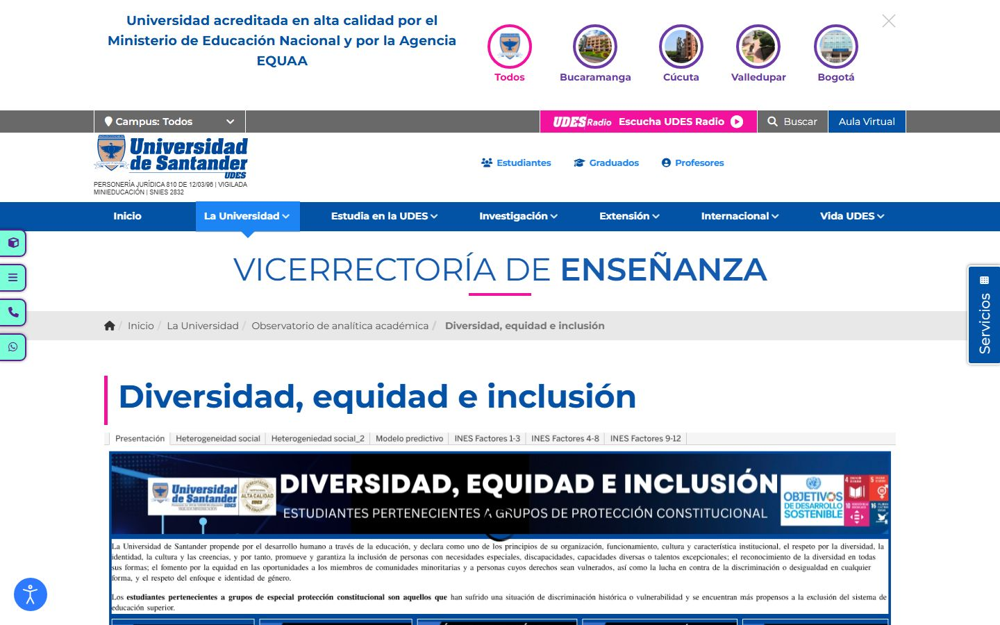
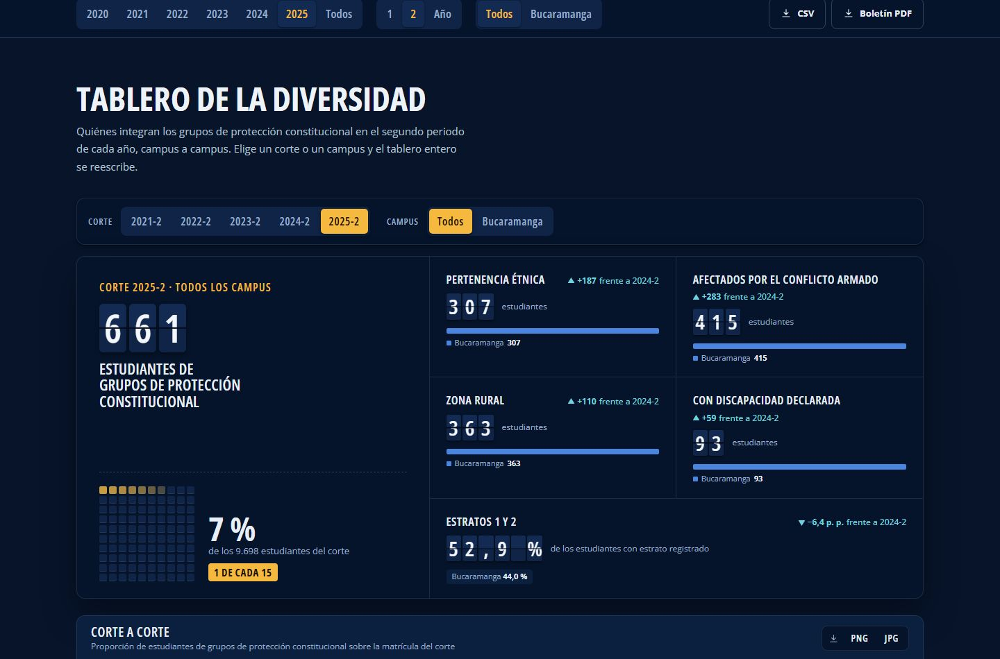
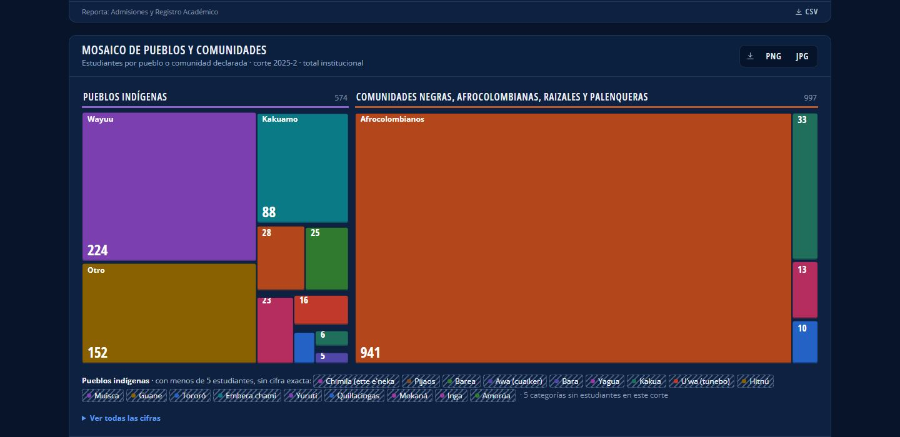
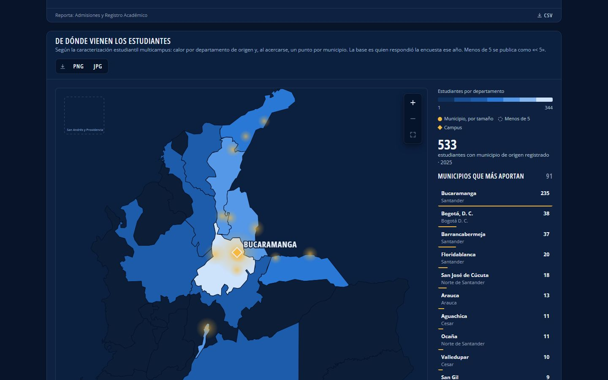
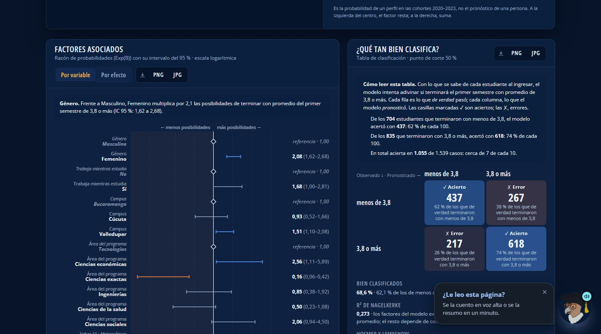

Oficina de Planeación Institucional · Universidad de Santander · 2026
ICInclusión, equidad y diversidad
661 personas, no 661 filas
con pertenencia étnica
afectados por el conflicto armado
de zona rural
con discapacidad declarada
Estudiantes de grupos de protección constitucional · corte 2025-2 · 1 de cada 15 de los 9.698 estudiantes del corte. Una persona puede estar en más de un grupo.
ICInclusión, equidad y diversidad
2021: un tablero dentro de la página
Lo publicó el Observatorio de analítica académica de la Vicerrectoría de Enseñanza.
Un visor externo de Tableau Public con cinco entradas: cifras poblacionales, modelo predictivo, INES, consultorio jurídico y mapa INCLUDES.
Fue el primer paso. Ya estaba la intención de medir la inclusión y mostrarla.
La oficina aparece con la cifra: Admisiones y Registro Académico.
¿Puedo llevármela?
Cada bloque se descarga en CSV, PNG y JPG, y el informe sale en boletín PDF.
¿Alguien me la explica?
Pilo la lee en voz alta o la resume en un minuto.
ICInclusión, equidad y diversidad
El mismo tema, otra forma de mirarlo
Arrastre la línea. A la izquierda, el portal de 2021. A la derecha, el de hoy.

Antes · 2021Ahora
ICInclusión, equidad y diversidad
De la fuente a la conversación
1
Fuentes
Admisiones y Registro Académico, formularios de inscripción, Saber 11, caracterización multicampus e INES del Ministerio.
2
Warehouse UDES
Reportes por periodo de Master, Galileo y Davinci. El código del estudiante queda como seudónimo irreversible.
3
Supabase
Base de datos con reglas por fila, autenticación y funciones del servidor.
4
Portal PDI
UDES en Cifras: informes, indicadores, desgloses, mapas y modelos, con su ficha enlazable.
5
Pilo
Memoria de cifras, búsqueda por significado y voz, siempre citando el corte.
En todo el recorrido cada cifra conserva su corte y su procedencia.
ICInclusión, equidad y diversidad
Seis reglas para transformar la data
Un vacío no es un cero
Lo que no se reportó se muestra como no reportado.
No reportado
Reserva estadística
Con menos de 5 personas no se publica la cifra, para proteger a quien está detrás.
< 5
Cada cifra dice su corte
Los años y los periodos se eligen sin perder el de dónde viene cada número.
Corte 2025-2
Cada cifra dice quién reporta
La oficina responsable aparece junto al dato.
Reporta: Admisiones y Registro
Nunca solo color
Todo estado lleva glifo y texto, y las paletas se verificaron para daltonismo.
▲ +187 frente a 2024-2
Un solo origen
El dato sale de una fuente; el texto editorial vive aparte y no lo pisa.
Dato ≠ editorial
ICInclusión, equidad y diversidad
Cómo lo construimos
informes en UDES en Cifras, uno de ellos el de inclusión
portales en un solo código: la oficina, el PDI y los datos abiertos
pruebas automáticas que vigilan reglas, cifras y permisos
Los informes son datos, no páginas: un catálogo de indicadores, desgloses, modelos y bloques que una persona de la oficina arma desde el Taller, sin tocar código.
React y TypeScriptSupabase y PostgreSQLPermisos por filaGSAP para el movimiento
ICInclusión, equidad y diversidad
…/diversidad-equidad-inclusion · Tablero de la diversidad

Un tablero que se reescribe
Se elige un corte o un campus y el tablero entero cambia: cifras, barras y comparación.
Cifras que voltean
Los dígitos giran hasta asentarse, como en un tablero de llegadas, y la variación va con glifo y texto.
Una de cada quince
La cifra se traduce a una proporción que cualquiera entiende, con su cuadrícula.
ICInclusión, equidad y diversidad
Los pueblos y el territorio, a la vista

Mosaico de pueblosCada pueblo y cada comunidad conserva su color de un corte a otro, y los grupos de menos de 5 se nombran sin cifra.

De dónde vienenPor departamento y, al acercarse, por municipio. La base es quien respondió la encuesta ese año.
ICInclusión, equidad y diversidad
Del archivo de SPSS al navegador
1
El análisis
Regresión logística binaria, con selección por pasos hacia adelante (Wald), en SPSS.
2
Los datos del modelo
Los coeficientes, las razones de probabilidades y sus intervalos se guardan como datos en Supabase. Solo agregados, ninguna persona.
3
El cálculo en vivo
El navegador evalúa el modelo cada vez que se mueve un control. No hace falta un servidor.
p = 1 / (1 + e−(−1,472 + Σ b))Probabilidad de un perfil: el punto de partida del modelo más lo que aporta cada factor elegido.
ICInclusión, equidad y diversidad
Arme un perfil, mire la probabilidad
Promedio del primer semestre de 3,8 o más
0 %corte 50 %100 %
Modelo real, cohortes 2020–2023, 1.539 estudiantes. Es la probabilidad de un perfil en esas cohortes, no el pronóstico de una persona.
ICInclusión, equidad y diversidad
La matemática se explica sola
bien clasificados: 1.055 de 1.539 casos, cerca de 7 de cada 10.
R² de Nagelkerke: los factores explican cerca de la cuarta parte; el resto depende de otras causas.
Factores asociados · ¿Qué tan bien clasifica?

ICInclusión, equidad y diversidad
Cómo preparamos a Pilo
1
Cifras en vivo
Guarda la serie completa de cada indicador por año, periodo y sede, armada desde el mismo catálogo del portal.
2
Búsqueda por significado
Combina palabras y vectores, para encontrar la cifra aunque la pregunta use otras palabras.
3
Entender la pregunta
Reglas sacan sede, año y periodo antes de llamar al modelo, también en las preguntas de seguimiento.
4
Reglas de honestidad
Toda cifra sale de la base y se cita. Lo que no viene de ahí se marca como conocimiento general.
5
Aprende de lo que no supo
Una bandeja reúne lo que Pilo no pudo responder; una persona lo resuelve y queda en el catálogo.
ICInclusión, equidad y diversidad
¿Cuántos estudiantes de grupos de protección constitucional hay?
Mr. Pilo
En el corte 2025-2 hay 661 estudiantes de grupos de protección constitucional: uno de cada 15 de los 9.698 estudiantes del corte. Reporta Admisiones y Registro Académico.
UDES en CifrasInclusión, equidad y diversidadCorte 2025-2
Respuesta armada con las cifras publicadas del portal, como ejemplo del formato.
En cada página. Pilo ofrece leerla en voz alta o resumirla en un minuto.
Con cita. La respuesta nombra el informe, el corte y la oficina.
Sin inventar. Si no hay dato, lo dice y lo deja para que una persona lo resuelva.
ICInclusión, equidad y diversidad
Lo que cambió
Antes · 2021
Ahora
Visor externo de Tableau Public
Portal propio, dentro del código institucional
Cinco entradas fijas
Corte, periodo y campus que se eligen y reescriben el tablero
Cifras en láminas
Cada cifra con su corte, su oficina y su descarga
Modelo predictivo en una lámina
Simulador con los coeficientes publicados y explicado en palabras
Lectura individual
Pilo lee, resume y responde con cita
ICInclusión, equidad y diversidad
Lo que sigue
Siguiente paso
Pilo que lee el modelo
Que explique cada razón de probabilidades con las frases que el portal ya publica, y responda dudas sobre cómo leerlo.
En construcción
Alertas tempranas
El Warehouse UDES reúne los reportes por periodo para detectar a tiempo a quien necesita apoyo.
Por completar
Todos los campus
Sumar al desglose por campus a Cúcuta, Valledupar y Bogotá, a medida que cada sede reporta.
Por completar
Más voces
Más formas de consultar: voz, otros idiomas y una lectura sencilla para quien usa poca tecnología.
ICInclusión, equidad y diversidad
La inclusión también se conversa
Se mide, se explica y se conversa. Cada persona detrás de una cifra merece que alguien la vea.
Consulte el portalplaneacion.udes.edu.co/datos-abiertos/diversidad-equidad-inclusion
Oficina de Planeación Institucional · Universidad de Santander